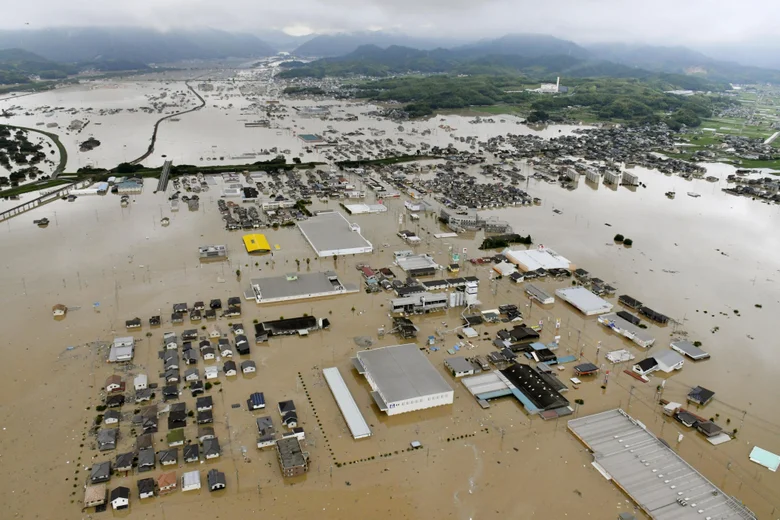

Homepage
food
climent
culture
Japan has subarctic in the north to subtropical in the south
Japans avarage weather is typically varies from 37°F to 87°F and is rarely below 33°F or above 93°F
Japan has had a extremely bad flood once and 176 people were counted dead
